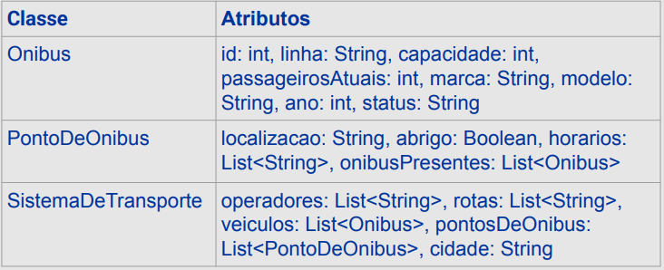
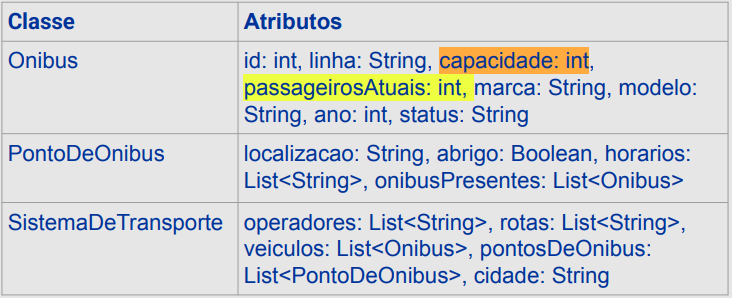
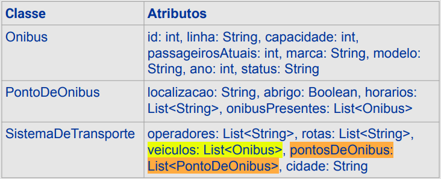

Disciplinas
ANÁLISE E PROJETO DE SOFTWARE ORIENTADO A OBJETOS. Concluído
Materiais
Análise e Projeto de Software Orientado a Objetos - Módulo 3 - Unidade 2 sendProf° ministrante: Luciano Édipo Pereira da Silva.
Conteúdo
Padrões Gerais de Atribuição de Responsabilidades - GRASP.
- Responsabilidades e Métodos;
- Padrões GRASP;
- Padrão Especialista na Informação;
- Padrão Criador;
- Padrão Baixo Acoplamento;
- Padrão Alta Coesão;
- Padrão Controlador
Responsabilidades e Métodos.
- Responsabilidade é “um contrato ou obrigação de um tipo ou classe” e está relacionada com o comportamento dos objetos;
- Divide-se em dois tipos básicos: de conhecer (alguma coisa) e de fazer (alguma coisa);
- Responsabilidades são atribuídas aos objetos do sistema durante o projeto OO;
- A distribuição dos métodos é influenciada pela granularidade da responsabilidade.
- Métodos são implementados para cumprir responsabilidades, podendo agir sozinhos ou em colaboração com outros métodos e objetos;
- Diagramas de interação (bem como sequência e comunicação) mostram decisões na atribuição de responsabilidades a objetos (implementadas como métodos).
Padrões GRASP.
- Os padrões GRASP (General Responsibility Assignment Software Patterns) oferecem guias práticos para a tomada de decisões na atribuição de responsabilidades e alocação de métodos;
- O conjunto possui nove padrões, mas os mais comuns são: Especialista na Informação, Criador, Baixo Acoplamento, Alta Coesão e Controlador;
- Os padrões GRASP (General Responsibility Assignment Software Patterns) oferecem guias práticos para a tomada de decisões na atribuição de responsabilidades e alocação de métodos;
- O nome foi escolhido por sugerir a importância de compreender (grasp) esses princípios para projetar com sucesso softwares OO.

Padrão Especialista na Informação.
- Consiste em atribuir responsabilidade para o especialista na informação — a classe que tem a informação necessária para cumprir a responsabilidade;
- É o padrão mais utilizado na atribuição de responsabilidades;
- Favorece baixo acoplamento e mantém o encapsulamento;
- Comportamento é distribuído por meio das classes, que tem a informação necessária para cumprir a responsabilidade.
- Ex. Qual classe tem a responsabilidade de calcular taxa de ocupação?

Padrão Criador.
- Consiste em atribuir à classe B a responsabilidade de criar uma instância da classe A se:
- B agrega instâncias de A;
- B contém instâncias de A;
- B registra instâncias de A;
- B tem os dados de inicialização para criar instâncias de A (B portanto é um especialista na criação de A);
- Ex. Qual classe deveria criar uma instância de Ônibus?

Não aumenta o acoplamento porque a classe criada provavelmente já é visível para a classe criadora (por causa das associações existentes entre elas).
Padrão Baixo Acoplamento.
- Consiste em atribuir a responsabilidade de modo que o acoplamento (dependência entre classes) permaneça baixo;
- Responsabilidade não é (ou é pouco) afetada por mudanças em outros componentes e se torna mais simples de entender isoladamente;
- Aumenta chances de reuso.
Padrão Alta Coesão.
- Consiste em atribuir a responsabilidade de modo que a coesão (o quanto as responsabilidades de uma classe são fortemente relacionadas) permaneça alta;
- Uma classe com alta coesão tem um número relativamente pequeno de métodos, com funcionalidades altamente relacionadas e não executa muito trabalho;
- Se a tarefa for grande, um objeto irá colaborar com outros objetos para dividir o esforço.
- Aumenta a clareza e a compreensão do projeto, além de simplificar a manutenção;
- Uma classe altamente coesa também não depende de muitas outras classes, pois possui funcionalidades altamente relacionadas, favorecendo o baixo acoplamento;
- Uma classe altamente coesa pode ser usada para uma finalidade muito específica, facilitando o reuso.
Padrão Controlador
- Consiste em atribuir a responsabilidade de tratar um evento do sistema para uma classe “controladora”, representando:
- o sistema como um todo (facade controller);
- o negócio ou organização com um todo (facade controller);
- uma coisa ou papel de uma pessoa do mundo real envolvida diretamente com a tarefa (role controller);
- um “tratador” (handler) artificial para todos os eventos de um caso de uso (use-case controller).
- Garante que a lógica da aplicação não seja tratada na camada de interface – apoia a reutilização da lógica em aplicações futuras e possibilita a substituição futura da interface com o usuário, aumentando a chance de reuso;
- Melhor controle sobre o estado do caso de uso para garantir que as operações do sistema ocorram em uma sequência válida.
- Se mal projetada, uma classe Controladora terá coesão baixa – falta de foco e tratamento de muitas áreas de responsabilidade;
- Uma única classe controladora recebe todos os eventos de sistema (e há muitos eventos) – em geral ocorre com “controlador de fachada” (facade controller);
- O próprio controlador executa muitas das tarefas necessárias para atender ao evento de sistema, sem delegar o trabalho.